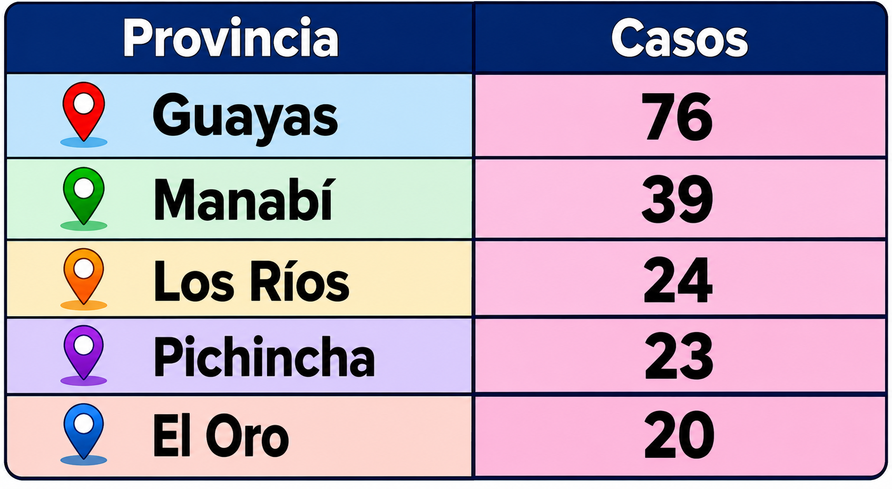
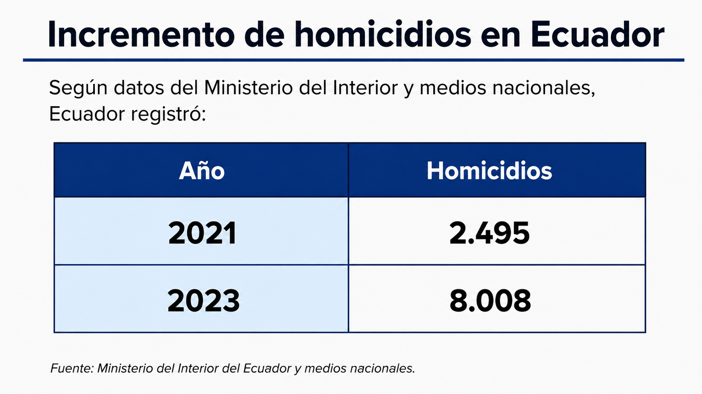
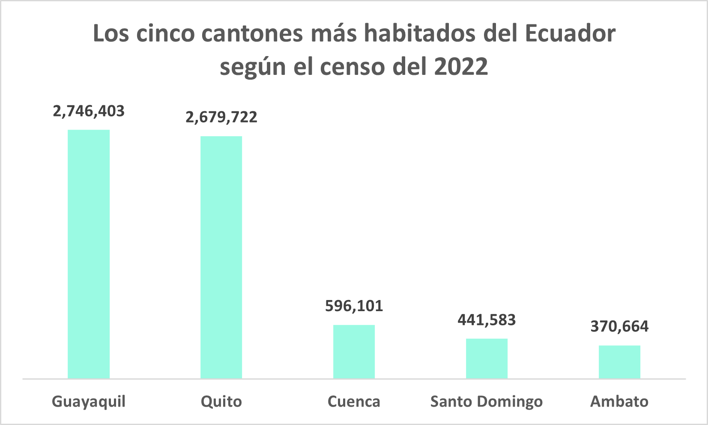
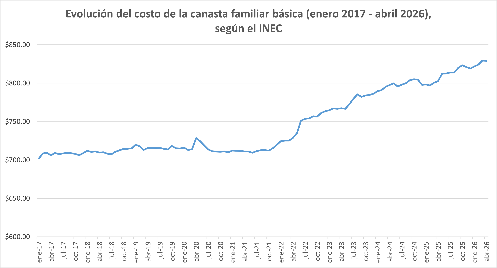
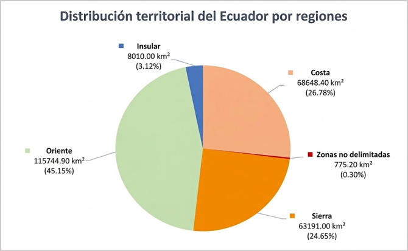
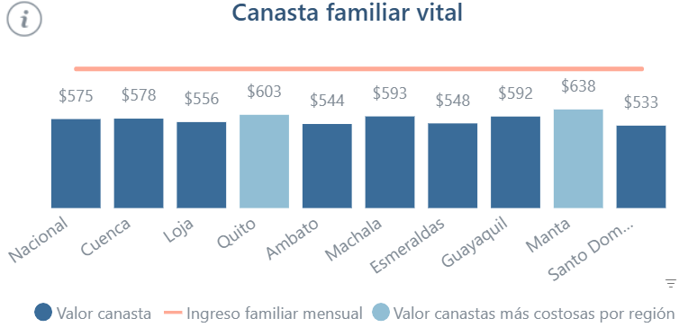

Bienvenido al portal de aprendizaje interactivo. Aquí podrás comprender de forma práctica conceptos estadísticos fundamentales y analizar datos reales.
La media es una medida estadística con la cual se obtiene un valor promedio de un conjunto de datos. Sirve para encontrar un punto de equilibrio donde los valores altos y bajos se compensan perfectamente.
x1,x2,x3,…,xn = Valores o datos del conjunto
n = Cantidad total de datos
| Indicador nacional en % respecto a la PEA | 2021 | 2022 | 2023 | 2024 | 2025 |
|---|---|---|---|---|---|
| Tasa de empleo adecuado | 32,5 | 34,4 | 36,3 | 35,9 | 37,1 |
Ingresa los números separados por espacios y una coma:
Es el número que queda justo en el centro de una lista de datos ordenados de menor a mayor. Sirve para evitar que los valores atípicos (muy bajos o muy altos) distorsionen la realidad de los datos, algo que sí ocurre fácilmente con el promedio.
Cuando la cantidad de valores es impar, la mediana es el valor central:
$$\tilde{x} = x_{\left(\frac{n + 1}{2}\right)}$$
Cuando la cantidad de valores es par, la mediana es el promedio de los 2 valores centrales:
$$\tilde{x} = \frac{x_{\left(\frac{n}{2}\right)} + x_{\left(\frac{n}{2} + 1\right)}}{2}$$
Al colocar de menor a mayor los costos de la canasta reportados por el INEC de las ciudades que monitorea, obtenemos lo siguiente:
| Santo Domingo | Esmeraldas | Machala | Guayaquil | Manta | |
|---|---|---|---|---|---|
| Costo | $ 773,71 | $ 797,02 | $ 804,07 | $ 843,25 | $ 854,83 |
| Posición del dato en la lista | \(x_{(1)}\) | \(x_{(2)}\) | \(x_{(3)}\) | \(x_{(4)}\) | \(x_{(5)}\) |
La muestra consta de 5 datos; por lo tanto, la cantidad es impar.
$$\tilde{x} = x_{\left(\frac{n + 1}{2}\right)}$$
$$\tilde{x} = x_{\left(\frac{5 + 1}{2}\right)} = x_{(3)}$$
$$\tilde{x} = $ 804,07$$
Al colocar de menor a mayor los costos de la canasta reportados por el INEC de las ciudades que monitorea, obtenemos lo siguiente:
| Ambato | Loja | Quito | Cuenca | |
|---|---|---|---|---|
| Costo | $ 807,43 | $ 827,70 | $ 865,22 | $ 873,14 |
| Posición del dato en la lista | \(x_{(1)}\) | \(x_{(2)}\) | \(x_{(3)}\) | \(x_{(4)}\) |
La muestra consta de 4 datos; por lo tanto, la cantidad es par.
$$\tilde{x} = \frac{x_{\left(\frac{n}{2}\right)} + x_{\left(\frac{n}{2} + 1\right)}}{2}$$
$$\tilde{x} = \frac{x_{\left(\frac{4}{2}\right)} + x_{\left(\frac{4}{2} + 1\right)}}{2} = \frac{x_{(2)} + x_{(3)}}{2}$$
$$\tilde{x} = \frac{827,70 + 865,22}{2} = $ 846.46$$
A continuación, puedes calcular la mediana de la lista de valores que ingreses:
Ingresa un valor en cada línea:
Para calcular la moda de un conjunto de datos estadísticos basta con contar el número de veces que aparece cada dato en la muestra, y el dato más repetido será la moda.
Sirve para definir una distribución estadística, ya que el valor más repetido suele estar por el centro de la distribución.
Moda unimodal: solo hay un valor con el máximo número de repeticiones.
Moda bimodal: el máximo número de repeticiones se produce en dos valores diferentes y ambos valores se repiten el mismo número de veces.
Moda multimodal: tres o más valores tienen el mismo número máximo de repeticiones.
¿Cuál es la moda del siguiente conjunto de datos?
\[5 \ ; \ 4 \ ; \ 9 \ ; \ 7 \ ; \ 2 \ ; \ 3 \ ; \ 9 \ ; \ 6 \ ; \ 5 \ ; \ 2 \ ; \ 5\]Los números están desordenados, por lo que primero los ordenaremos para que sea más fácil encontrar la moda.
\[2 \ ; \ 2 \ ; \ 3 \ ; \ 4 \ ; \ 5 \ ; \ 5 \ ; \ 5 \ ; \ 6 \ ; \ 7 \ ; \ 9 \ ; \ 9\]Los números 2 y 9 aparecen dos veces, pero el número 5 está repetido tres veces. Por lo tanto, la moda de la serie de datos es el número 5.
\[Mo=5\]Calcula la moda del siguiente conjunto de datos:
\[8 \ ; \ 7 \ ; \ 0 \ ; \ 6 \ ; \ 10 \ ; \ 9 \ ; \ 13 \ ; \ 8 \ ; \ 0 \ ; \ 6 \ ; \ 2 \ ; \ 6 \ ; \ 5 \ ; \ 11 \ ; \ 10 \ ; \ 0 \ ; \ 9 \ ; \ 8 \ ; \ 6 \ ; \ 12 \ ; \ 3 \ ; \ 5 \ ; \ 11 \ ; \ 1 \ ; \ 4 \ ; \ 8 \ ; \ 10 \ ; \ 2 \ ; \ 5 \ ; \ 7\]Primero ponemos los números en orden:
\[0 \ ; \ 0 \ ; \ 0 \ ; \ 1 \ ; \ 2 \ ; \ 2 \ ; \ 3 \ ; \ 4 \ ; \ 5 \ ; \ 5 \ ; \ 5 \ ; \ 6 \ ; \ 6 \ ; \ 6 \ ; \ 6 \ ; \ 7 \ ; \ 7 \ ; \ 8 \ ; \ 8 \ ; \ 8 \ ; \ 8 \ ; \ 9 \ ; \ 9 \ ; \ 10 \ ; \ 10 \ ; \ 10 \ ; \ 11 \ ; \ 11 \ ; \ 12 \ ; \ 13\]Como puedes comprobar, el número 6 y el número 8 aparecen un total de cuatro veces, el máximo número de repeticiones. Por lo tanto, en este caso se trata de una moda bimodal y ambos números son la moda del conjunto de datos:
\[Mo=\{ 6 \ ; \ 8\}\]Halla la moda del siguiente conjunto de datos:
\[21 \ ; \ 27 \ ; \ 32 \ ; \ 15 \ ; \ 13 \ ; \ 20 \ ; \ 21 \ ; \ 21 \ ; \ 25 \ ; \ 27 \ ; \ 31 \ ; \ 30 \ ; \ 19 \ ; \ 20 \ ; \ 16 \ ; \ 22 \ ; \ 19 \ ; \ 20 \ ; \ 31 \ ; \ 18 \ ; \ 20 \ ; \ 25 \ ; \ 26 \ ; \ 15 \ ; \ 20 \ ; \ 31 \ ; \ 31 \ ; \ 27 \ ; \ 16 \ ; \ 17 \ ; \ 31 \ ; \ 27 \ ; \ 24 \ ; \ 23 \ ; \ 21 \ ; \ 27 \ ; \ 29 \ ; \ 36 \ ; \ 32 \ ; \ 30 \ ; \ 16 \ ; \ 22 \ ; \ 15 \ ; \ 14 \ ; \ 37\]Como hay muchos datos, primero los ordenamos en orden creciente para que así sea más fácil contarlos:
\[13 \ ; \ 14 \ ; \ 15 \ ; \ 15 \ ; \ 15 \ ; \ 16 \ ; \ 16 \ ; \ 16 \ ; \ 17 \ ; \ 18 \ ; \ 19 \ ; \ 19 \ ; \ 20 \ ; \ 20 \ ; \ 20 \ ; \ 20 \ ; \ 20 \ ; \ 21 \ ; \ 21 \ ; \ 21 \ ; \ 21 \ ; \ 22 \ ; \ 22 \ ; \ 23 \ ; \ 24 \ ; \ 25 \ ; \ 25 \ ; \ 26 \ ; \ 27 \ ; \ 27 \ ; \ 27 \ ; \ 27 \ ; \ 27 \ ; \ 29 \ ; \ 30 \ ; \ 30 \ ; \ 31 \ ; \ 31 \ ; \ 31 \ ; \ 31 \ ; \ 31 \ ; \ 32 \ ; \ 32 \ ; \ 36 \ ; \ 37\]Los números que más se repiten son el 20, el 27 y el 31, los tres números están repetidos cinco veces. De modo que la moda de este ejemplo es multimodal.
\[Mo=\{ 20 \ ; \ 27 \ ; \ 31\}\]Ingresa los números separados por espacios y una coma:
Cuando tenemos los datos agrupados en forma de intervalos realmente no sabemos cuántas veces está repetido cada dato, solamente conocemos la frecuencia de cada intervalo.
Por lo tanto, para calcular la moda de unos datos agrupados en intervalos se debe utilizar la siguiente fórmula:
\[Mo = L_i + \frac{f_i - f_{i-1}}{(f_i - f_{i-1}) + (f_i - f_{i+1})}\cdot A_i\]
Li = Límite inferior del intervalo de la clase modal.
fi = Frecuencia absoluta de la clase modal.
fi-1 = Frecuencia absoluta de la clase inmediatamente anterior a la clase modal.
fi+1 = Frecuencia absoluta de la clase inmediatamente posterior a la clase modal.
Ai = Amplitud del intervalo

| Intervalo de casos | 20 – 30 | 30 – 40 | 40 – 50 | 50 – 80 |
|---|---|---|---|---|
| Frecuencia | 3 | 1 | 0 | 1 |
\[\begin{aligned}L_i &= 20 \\f_i &= 3 \\f_{i-1} &= 0 \\f_{i+1} &= 1 \\t_i &= 10\end{aligned}\]
\[Mo = 20 + \frac{3-0}{(3-0)+(3-1)} \cdot 10\]
\[Mo = 20 + \frac{3}{3+2} \cdot 10\]\[Mo = 20 + \frac{3}{5}(10)\]\[Mo = 20 + 6\]\[Mo = 26\]
\[Mo = 26\]
Esto significa que el número más frecuente de casos de femicidios entre las provincias analizadas se encuentra alrededor de 26 casos.
Límite inferior del intervalo modal (Li):
Frecuencia de la clase modal (fi):
Frecuencia de la clase anterior (fi-1):
Frecuencia de la clase siguiente (fi+1):
Amplitud del intervalo (Ai):
Es una forma de expresar una cantidad como una fracción de 100 partes iguales, usando el símbolo %. Sirve para comparar datos de manera sencilla, estandarizar mediciones y mostrar cambios con claridad en diversos asuntos como descuentos comerciales, estadísticas demográficas, tasas de interés financieras, etc.
Para calcular la parte, cuando se conoce el porcentaje y el total:
\[ Parte = \frac{Porcentaje \times Total}{100} \]
Para calcular el porcentaje, cuando se conoce la parte y el total:
\[ Porcentaje = \frac{Parte \times 100}{Total} \]
Para calcular el total, cuando se conoce la parte y el porcentaje:
\[ Total = \frac{Parte \times 100}{Porcentaje} \]
¿Cuántas provincias son amazónicas si juntas corresponden al 25 % de las 24 provincias que conforman el Ecuador?
Porcentaje: 25
Total: 24
\[ Parte = \frac{Porcentaje \times Total}{100} = \frac{25 \times 24}{100} = \frac{600}{100} = 6\]
La Amazonía tiene 6 provincias.
¿A qué porcentaje corresponden las 10 provincias de la Sierra, si el Ecuador está conformado por 24 provincias?
Parte: 10
Total: 24
\[ Porcentaje = \frac{Parte \times 100}{Total} = \frac{10 \times 100}{24} = \frac{1000}{24} = 41,6\widehat{6} \]
Las 10 provincias de la Sierra corresponden al \( 41,6\widehat{6} \) % del total de 24 provincias del Ecuador.
¿Cuántas provincias hay en el Ecuador, conociendo que las 7 provincias de la Costa corresponden al \( 29,1\widehat{6} \) %?
Parte: 7
Porcentaje: \( 29,1\widehat{6} %? \) (el arco sobre el 6 significa que este dígito se repite indefinidamente)
\[ Total = \frac{Parte \times 100}{Porcentaje} = \frac{7 \times 100}{29,17} = \frac{700}{29,1\widehat{6}} = 24 \]
El Ecuador está conformado por 24 provincias.
A continuación, puedes hacer cualquier cálculo de porcentaje, usando estas 3 calculadoras:
Para calcular la parte, cuando se conoce el porcentaje y el total:
Para calcular el porcentaje, cuando se conoce la parte y el total:
Para calcular el total, cuando se conoce la parte y el porcentaje:
La tendencia en estadística es la dirección o comportamiento que siguen los datos a lo largo del tiempo. Permite identificar si algo aumenta, disminuye o se mantiene estable. Sirve para analizar cambios en el tiempo, predecir comportamientos futuros y tomar decisiones basadas en datos.
MMt = Resultado promedio en el período t.
t = Período de tiempo actual.
X1, X2, ..., Xn = Valores observados en cada período.
n = Número de períodos incluidos.

\[\bar{x} = \frac{0.30+0.84+0.31+0.43−0.14+0.17+1.00+0.35+0.59+0.20+1.27+0.27+0.53}{13} = 0.49\]
La tendencia general es moderadamente positiva, con picos en 2020 y 2024.
Ingresa tus datos históricos ordenados cronológicamente, separados por comas:
Consiste en analizar representaciones visuales de datos —como barras, líneas o gráficos circulares— y obtener información importante. Sirve para simplificar datos complejos y facilitar la identificación de patrones, tendencias y relaciones, con el fin de comprender un tema o tomar decisiones más informadas.
Representa datos mediante barras rectangulares de diferentes tamaños. Sirve para para comparar cantidades entre distintas categorías de forma clara y visual.

Interpretando el gráfico, observamos que Guayaquil y Quito son los cantones más habitados del Ecuador, mientras que Cuenca, Santo Domingo y Ambato registran poblaciones considerablemente más bajas que las dos primeras ciudades.
Representa datos mediante puntos unidos por líneas rectas. Sirve para mostrar cambios, tendencias o variaciones de una o más variables a lo largo del tiempo.

El gráfico muestra que entre el 2017 y casi todo el 2021, el costo de la canasta estuvo relativemente estable, rondando los $ 710; pero en el tiempo posterior, desde finales desde el 2021 hasta abril 2026, el costo ha tenido un ascenso constante, llegando a superar los $ 820, lo cual evidencia cómo en los últimos años se ha encarecido el presupuesto necesario para cubrir las necesidades básicas de un hogar.
Representa datos mediante sectores de un círculo, donde cada parte corresponde a una proporción del total. Sirve para visualizar y comparar porcentajes o cantidades relativas, de manera clara y rápida.

Este gráfico circular demuestra una notable asimetría en la distribución territorial del Ecuador, donde la región del Oriente (Amazonía) representa casi la mitad de la extensión total del país con un 45.15%. El resto del territorio se concentra de manera equitativa entre la Costa (26.78%) y la Sierra (24.65%), mientras que la región Insular (Galápagos) junto con las zonas no delimitadas constituyen una porción marginal que, sumadas, apenas alcanzan el 3.42% del suelo nacional.
El análisis de datos se ha convertido en un pilar esencial en la toma de decisiones efectiva, tanto en el ámbito empresarial como en la investigación. Sirve para el proceso de inspeccionar, limpiar, transformar y modelar grandes volúmenes de datos con el objetivo de descubrir información útil, llegar a conclusiones y respaldar la toma de decisiones.
La gráfica presentada muestra el valor de la Canasta familiar vital en distintas ciudades del Ecuador durante abril de 2026, así como el ingreso familiar mensual promedio. El valor nacional de la canasta se ubicó en 575 dólares, mientras que el ingreso familiar mensual fue aproximadamente de 899.73 dólares.

Al analizar la información de la Canasta familiar vital de abril de 2026, se observa que el valor nacional fue de 575 dólares. Sin embargo, existen diferencias entre ciudades. La canasta más costosa se registró en Manta con 638 dólares, seguida de Quito con 603 dólares y Machala con 593 dólares. Por el contrario, las ciudades con los valores más bajos fueron Santo Domingo con 533 dólares, Ambato con 544 dólares y Esmeraldas con 548 dólares.
También se observa que el ingreso familiar mensual promedio fue de aproximadamente 899.73 dólares, lo que permite cubrir el costo de la canasta familiar en la mayoría de las ciudades. No obstante, en Manta el ingreso promedio prácticamente coincide con el valor de la canasta, por lo que las familias tendrían menos recursos disponibles para otros gastos.
Estos datos muestran que el costo de vida varía según la ciudad y que algunas familias necesitan destinar una mayor parte de sus ingresos para cubrir sus necesidades básicas.
- La Canasta familiar vital presentó diferencias entre las ciudades del Ecuador durante abril de 2026.
- Manta fue la ciudad con el mayor costo de la canasta familiar, mientras que Santo Domingo registró el menor valor.
- El ingreso familiar promedio permite cubrir la canasta familiar a nivel nacional.
- El análisis de datos facilita la comparación de información y ayuda a comprender mejor la realidad económica de las familias ecuatorianas.
- A partir de los datos analizados se pueden obtener conclusiones útiles para la toma de decisiones y la evaluación de la calidad de vida de la población.
Es el proceso de identificar datos, comportamientos o valores que se alejan significativamente de lo normal dentro de un conjunto de información. Sirve para descubrir errores, fraudes, riesgos o situaciones inusuales que pueden ser importantes para analizar y tomar decisiones.
Se la puede utilizar para encontrar fraudes (por ejemplo, en tarjetas de crédito), fallos en maquinaria, intrusiones en redes, errores en datos o comportamientos raros en sistemas, permitiendo actuar a tiempo para prevenir riesgos o pérdidas.
Está profundamente ligada a la estadística, porque utiliza sus principios fundamentales para cuantificar qué es habitual y qué es un "desvío"; para ello, usa los conceptos vistos en este página web, como media, mediana, moda y tendencia, además de otros como desviación estándar, dispersión y probabilidad.
Imaginemos una gran empresa exportadora ecuatoriana. Entre 2019 y 2024 declara utilidades cercanas a los 25 millones de dólares. Sin embargo, en 2025 reporta una utilidad de apenas 1 millón de dólares.
| Año | Utilidad (millones USD) |
|---|---|
| 2019 | 24 |
| 2020 | 26 |
| 2021 | 25 |
| 2022 | 27 |
| 2023 | 24 |
| 2024 | 26 |
| 2025 | 1 |
La mediana es 25 millones de dólares. Esto indica que, en condiciones normales, la empresa suele obtener utilidades cercanas a ese valor.
La media es 21,86 millones de dólares. Este valor es menor que la mediana porque la utilidad de 2025 reduce considerablemente el promedio.
Además, la tendencia entre 2019 y 2024 es estable, ya que las utilidades se mantienen entre 24 y 27 millones de dólares.
Sin embargo, en 2025 la utilidad cae a 1 millón de dólares. Este valor presenta una gran desviación respecto al comportamiento habitual de la serie.
Por ello, el dato de 2025 se considera una anomalía o valor atípico. La estadística no permite determinar la causa de esta diferencia. Sin embargo, una variación tan extrema justificaría una revisión más detallada para descartar errores de registro, pérdidas extraordinarias o posibles casos de evasión fiscal.